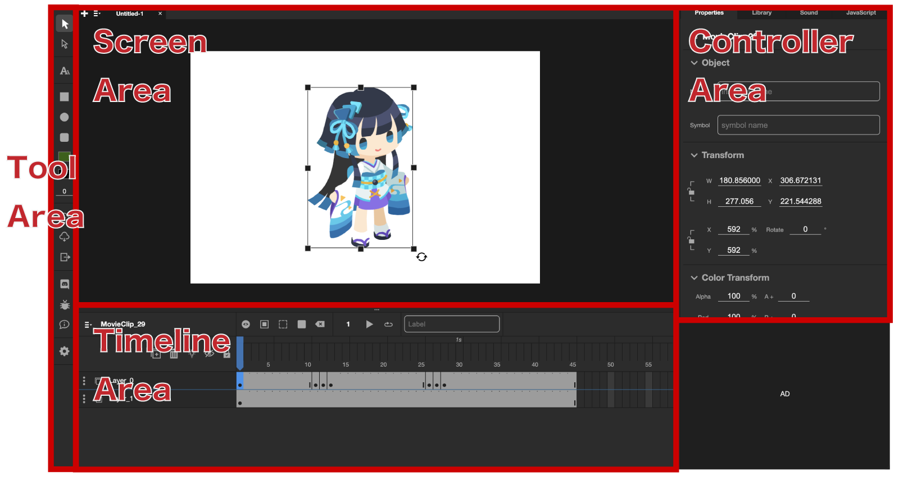

How to use and sample videos
WorkSpace

The work space is divided into Tool Area, Screen Area, Timeline Area, and Controller Area, The functions of each area are as follows.
Tool Area
This area contains various tools and settings such as drawing tools, text tools, project loading and saving, export settings, and language settings.
Screen Area
This is the area where you can check the drawing information such as viewing, placement, and stacking order of the DisplayObjects displayed on the Stage in the current frame. You can preview and play the Player by pressing Command+Enter or Ctrl+Enter.
Timeline Area
This is the area where you can control layers, animation keyframes, etc. You can set the Label name, embed any JavaScript in the frame, and control the addition and removal of tweens for each layer.
Controller Area
In this area, you can perform operations such as scaling, rotation, color manipulation, BlendMode, Filter, etc. on DisplayObjects in the screen area. The JavaScript tab allows you to view and edit the list of JavaScript embedded in the entire project.